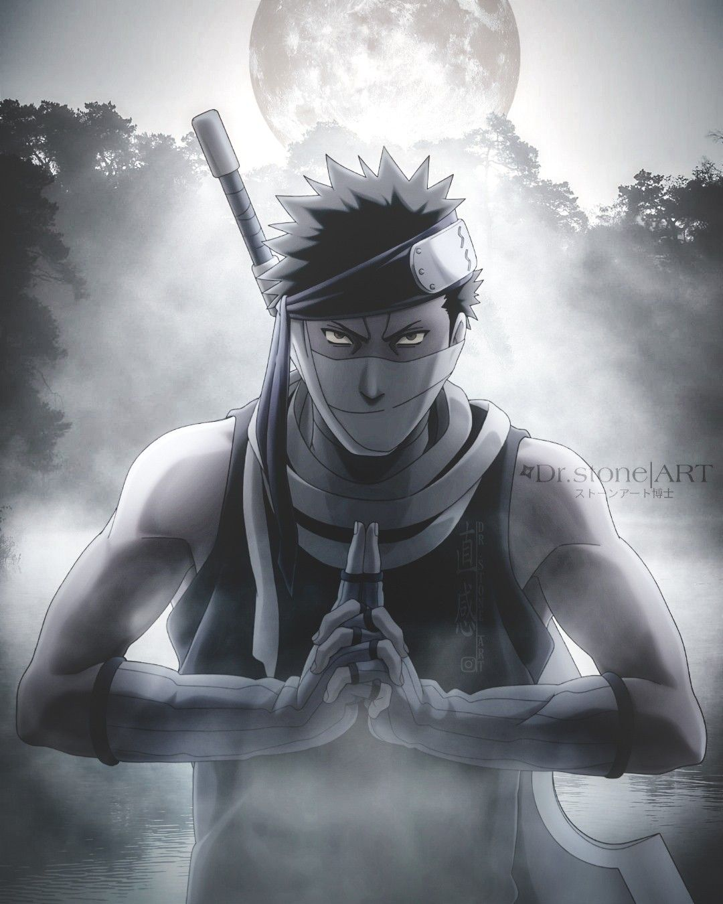

"Do you want to know whether I'm a demon or not?! Meet me in Hell."
Zabuza Momochi

Biography
Zabuza Momochi is a former member of the 7 Swordsmen of the Mist and the Anbu (Special Purpose Ninja) from Kirigakure - The Village Hidden in the Mist, now a fugitive ninja (nukenin). As a child, not even being a student of the ninja academy, Zabuza infiltrated the genin exam and slaughtered over a hundred students, for which he received the nickname "Demon of the Hidden Mist". Later became an anbu, and then joined the ranks of ? swordsmen of the mist. Zabuza soon met a boy named Haku with special powers and began training him to turn him into his ultimate weapon. Determined to gain power, Zabuza attempted to stage a coup and kill the Fourth Mizukage, but was defeated and fled the village with several associates. Becoming a mercenary, Zabuza began to kill for money to raise funds for a new revolution, then he and Haku met Team 7 (Naruto, Sasuke and Sakura) and Kakashi Hatake. It was Zabuza and Haku who inspired Naruto to choose his ninja path and markedly influenced the stage of his growing up.
Strength
- Physical strength far beyond human peak
- Can wield a massive sword with one hand
- Can cut large objects in a single strike
Speed & Reflexes
- Hypersonic reaction level
- Elite shinobi movement and combat speed
Endurance & Survivability
- Can continue fighting while heavily injured
- Extreme pain tolerance
- High chakra endurance
Intelligence
Tactical fighter with strong analytical ability and intimidation skills.
Skills & Martial Arts
- Master of Kenjutsu
- Elite assassination techniques
- Water-based ninjutsu specialist
Abilities
- Hidden Mist Technique
- Water Dragon Jutsu
- Water Prison Technique
- Clone techniques
Equipment
- Kubikiribocho (Executioner's Blade)
- Tanto
- Kunai & Shuriken